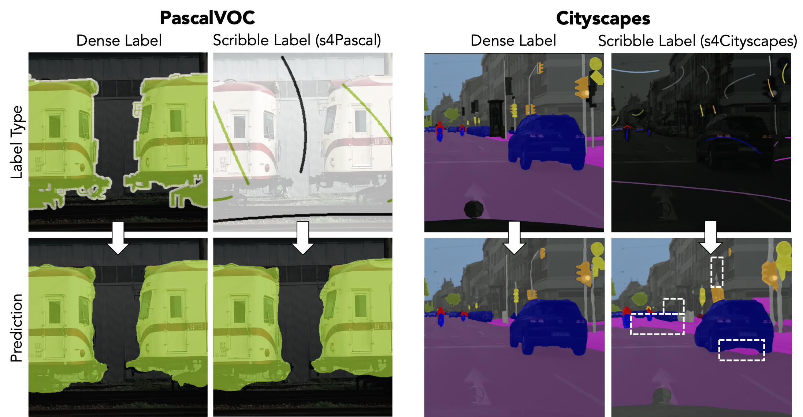
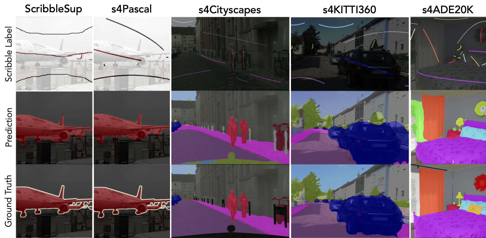
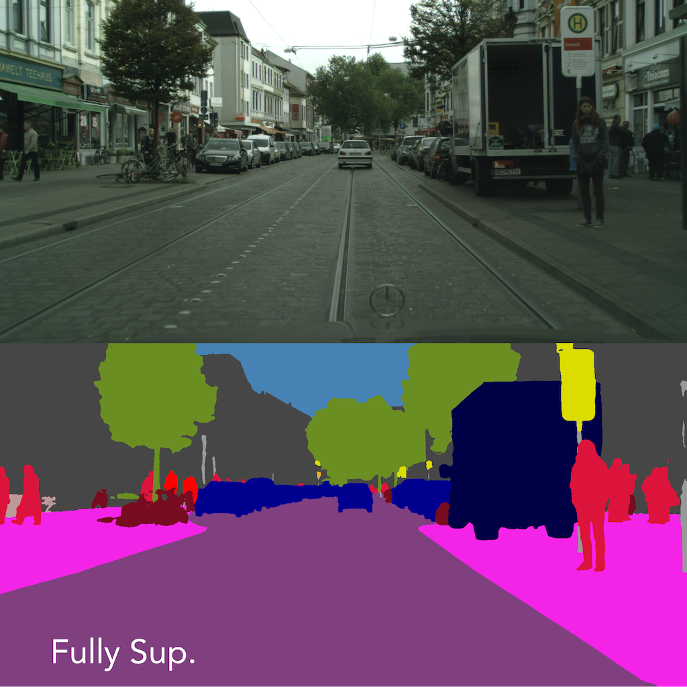
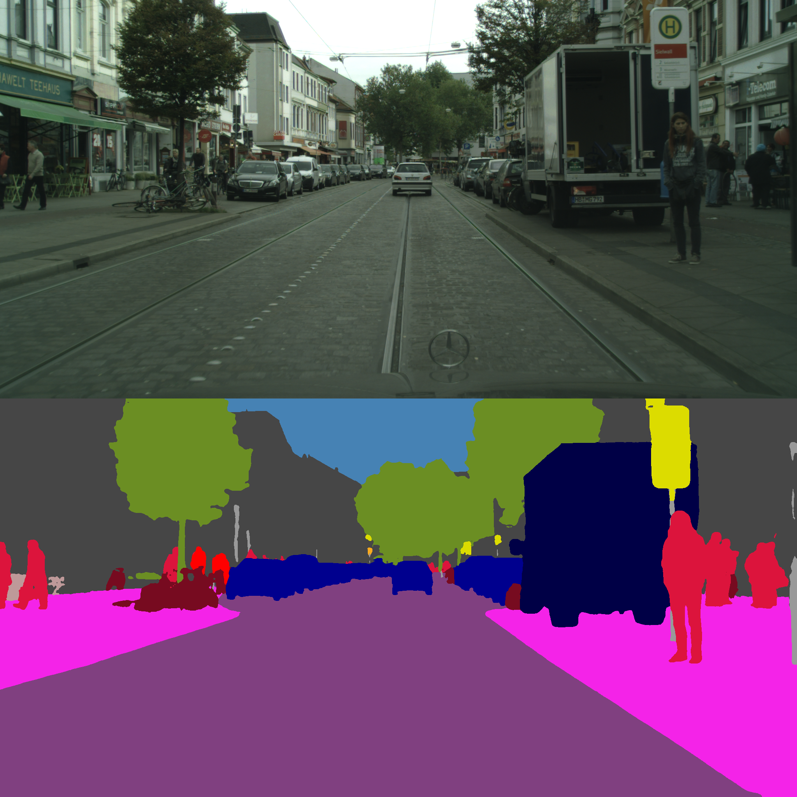
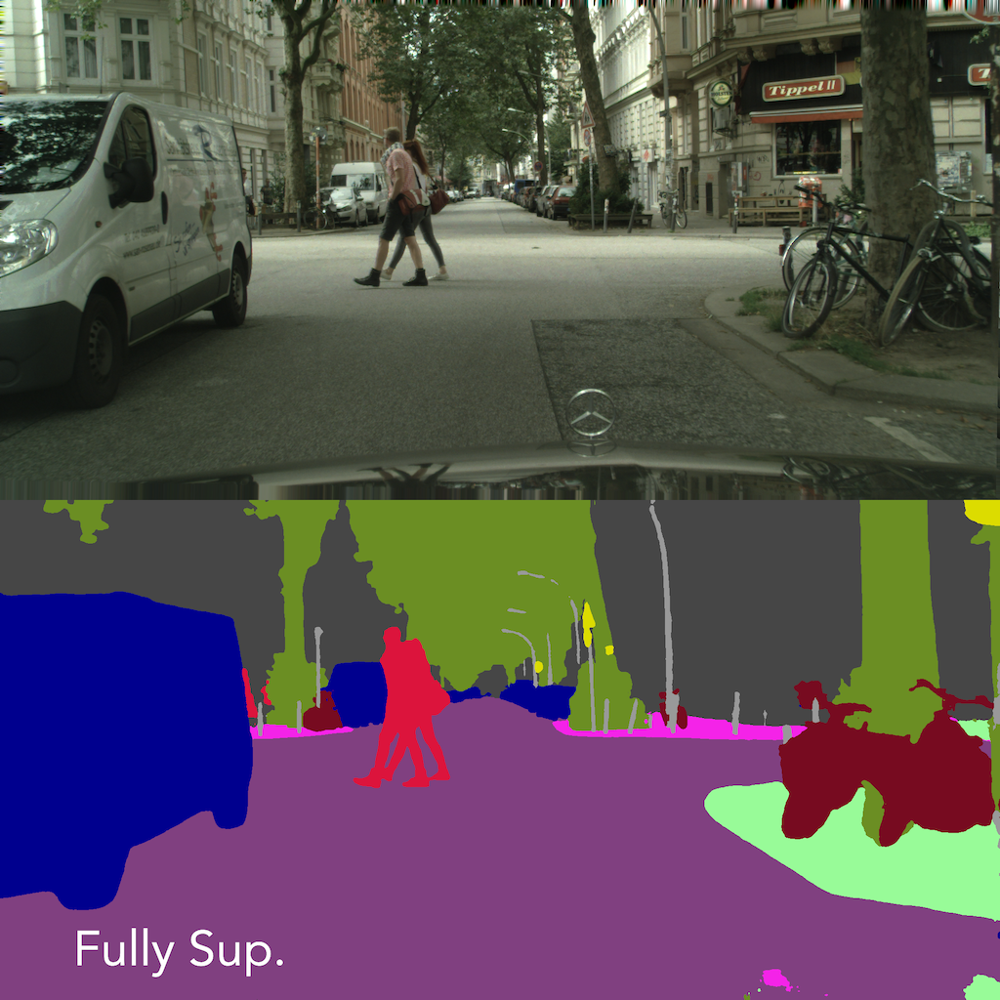
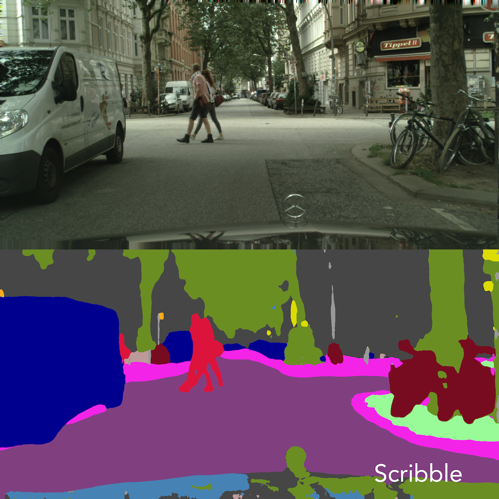
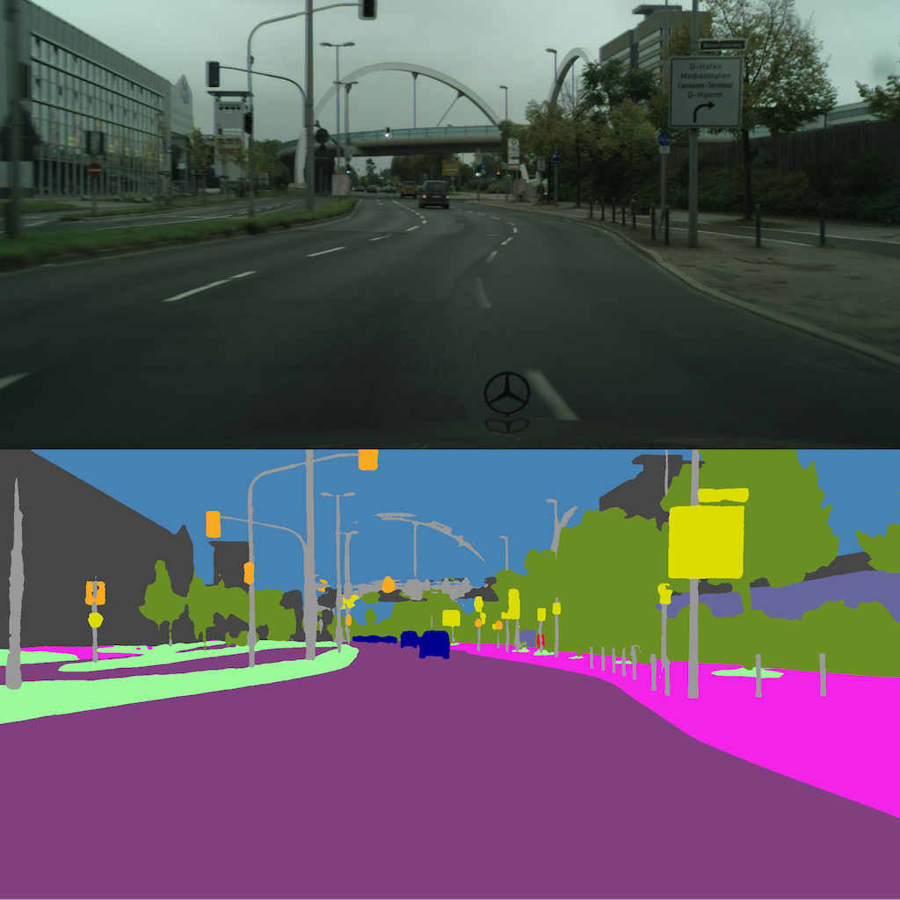
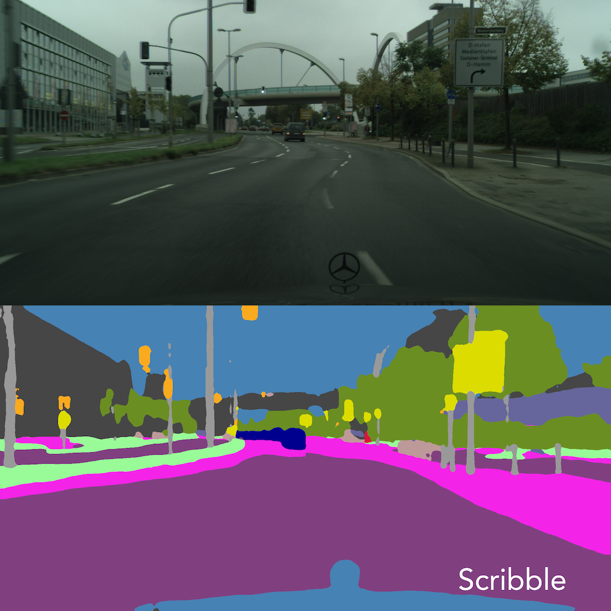
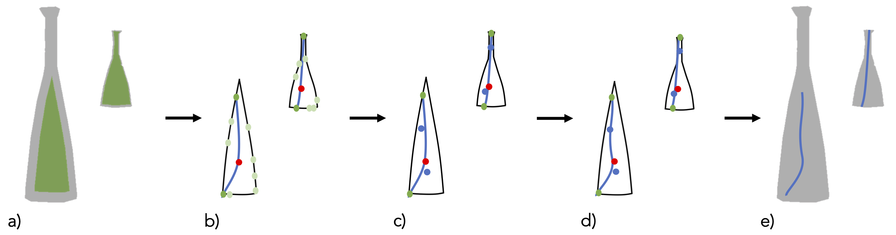

In this work, we introduce Scribbles for All, a label and training data generation algorithm for semantic segmentation trained on scribble labels. Training or fine-tuning semantic segmentation models with weak supervision has become an important topic recently and was subject to significant advances in model quality. In this setting, scribbles are a promising label type to achieve high quality segmentation results while requiring a much lower annotation effort than usual pixel-wise dense semantic segmentation annotations. The main limitation of scribbles as source for weak supervision is the lack of challenging datasets for scribble segmentation, which hinders the development of novel methods and conclusive evaluations. To overcome this limitation, Scribbles for All provides scribble labels for several popular segmentation datasets and provides an algorithm to automatically generate scribble labels for any dataset with dense annotations, paving the way for new insights and model advancements in the field of weakly supervised segmentation. In addition to providing datasets and algorithm, we evaluate state-of-the-art segmentation models on our datasets and show that models trained with our synthetic labels perform competitively with respect to models trained on manual labels. Thus, our datasets enable state-of-the-art research into methods for scribble-labeled semantic segmentation. The datasets, scribble generation algorithm, and baselines are publicly available here.

The primary limitation of scribbles as a source for weak supervision is the lack of challenging datasets for scribble segmentation. This impedes the development of novel methods and conclusive evaluations. Two challenges emerge for the research area of scribble-supervised segmentation methods. Firstly, generalization of methods to other datasets cannot be verified. Secondly, PascalVOC is too easy to serve as the sole benchmark for scribble-supervised methods as visualized above.
Therefore, we present Scribbles for All:

The images displayed above illustrate the scribble labels generated for the s4-datasets, superimposed on the scene image. Furthermore, a dense segmentation map is provided for comparison purposes, as well as the prediction of a state-of-the-art (SOTA) method trained on the s4-scribble dataset. Each instance on the original segmentation map is labelled with a scribble if it exceeds a minimum area threshold dependent on the dataset. Furthermore, this illustrates the necessity for more complex scribble datasets, which is addressed by this work. While the predictions for s4Pascal//ScribbleSup are very close to fully supervised standards, the disparity between ground-truth and prediction is higher for the more complex datasets. This emphasises the greater difficulty posed by these datasets and establishes meaningful benchmarks for more sophisticated weakly supervised segmentation methods.
Below, we illustrate the prediction differences of models trained on our challenging s4Datasets compared to a fully supervised model. (The examples are generated with the SegformerB4-backbone, the SASS method is EMA)







The presented scribble generation algorithm takes an image with corresponding dense segmentation labels as input and produces a single scribble, represented as a set of points, for each object in the image. We formulate the following design objectives:
The fundamental steps of the algorithm are outlined in the figure above.
For further details feel free to read the paper.
@inproceedings{boettcherScribblesAllBenchmarking2024,
title = {Scribbles for All: {{Benchmarking}} Scribble Supervised Segmentation across Datasets},
booktitle = {Advances in Neural Information Processing Systems},
author = {Boettcher, Wolfgang and Hoyer, Lukas and Unal, Ozan and Lenssen, Jan Eric and Schiele, Bernt},
editor = {Globerson, A. and Mackey, L. and Belgrave, D. and Fan, A. and Paquet, U. and Tomczak, J. and Zhang, C.},
date = {2024},
volume = {37},
pages = {46002--46024},
publisher = {Curran Associates, Inc.},
doi = {10.52202/079017-1463},
url = {https://proceedings.neurips.cc/paper_files/paper/2024/file/51cd2b3608d7ae17a9fadcc6e1f68629-Paper-Datasets_and_Benchmarks_Track.pdf}
}